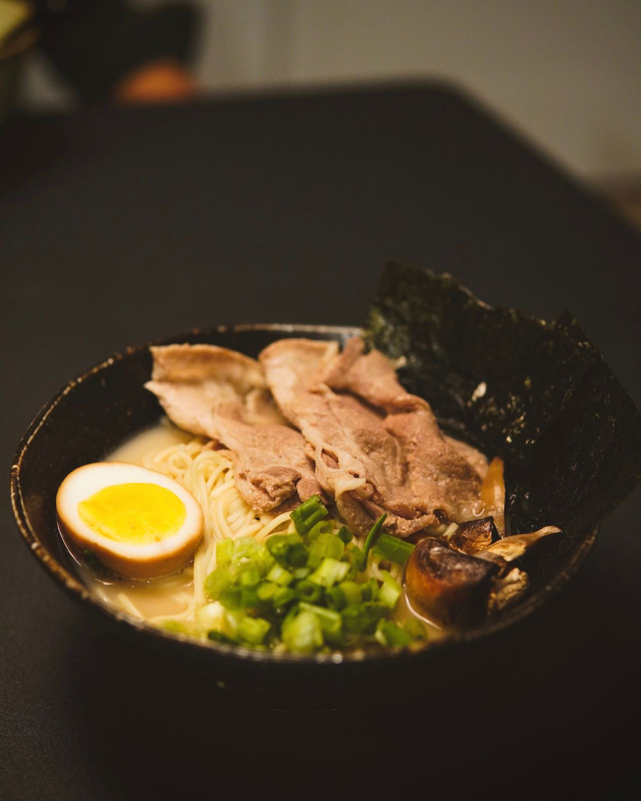
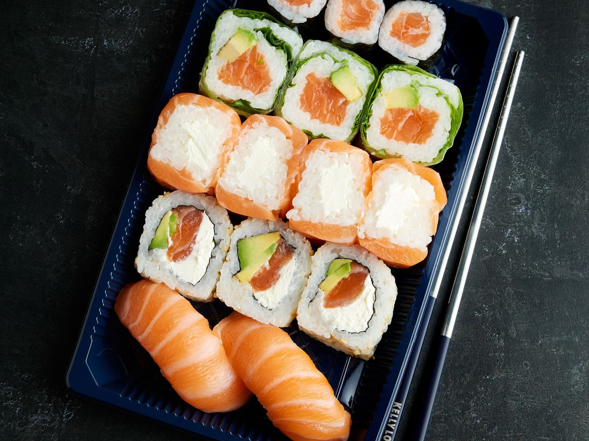

Sushi & ramen · Hornsgatan
Ramen & nigiri, gjort med omsorg
Ett familjedrivet kök på Hornsgatan 77 – färsk sushi, värmande ramen och poke bowls.
Ring & beställ5,0 / 5 · 50+ omdömen på Google

Meny
Från köket
01
Nigiri
Färsk fisk på handformat ris.
02
Maki
Rullar med fisk och grönsaker.
03
Ramen
Mustig buljong och nudlar.
04
Poke bowl
Ris, fisk och grönsaker.
05
Misosoppa & sallad
Ingår till maten.
06
Kimchi
Syrligt och krispigt.
Fråga om hela menyn och dagens priser.

Om oss
Familjedrivet på Söder
Hos Edo lagas allt med omsorg av familjen bakom disken. Till maten bjuder vi på misosoppa och sallad – ät på plats, ta med eller beställ online.
5,0
i snittbetyg på Google – gästerna nämner färsk fisk och vänligt bemötande.
Besök
Öppettider
| Måndag – fredag | 11:00 – 21:00 |
| Lördag – söndag | 12:00 – 21:00 |
Hornsgatan 77, 118 49 Stockholm
Södermalm · nära Zinkensdamm
076-011 60 26